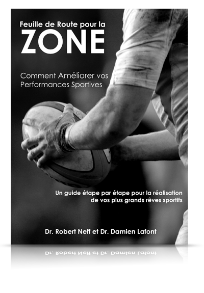

Feuille de Route pour
la Zone
Comment Améliorer vos Performances Sportives
Imaginez que vous ayez votre propre Préparateur Mental pour concevoir un programme d'entrainement mental spécialement pour vous.
Et si ce programme définissait exactement ce que vous aviez à faire pour donner le meilleur de vous-même et finalement trouver cette insaisissable "zone"? Et si il vous préparait pour les moments difficiles en vous donnant des outils efficaces pour surmonter l'adversité? Et si ce programme pouvait aussi être adapté lorsque vous vous améliorez et progressez? Pensez-vous que vos chances d'atteindre vos rêves sportifs seraient meilleures?
Ce livre a été conçu exactement pour faire toutes ces choses et plus encore : Vous apprendrez les techniques de base de préparation mentale et surtout comment les appliquer simplement dans votre sport.
Feuille de Route pour la Zone est le meilleur outil pour compléter le travail avec un Préparateur Mental.
Telecharger votre exemplaire pour seulement 10 euros !
Les auteurs
Dr. Robert Neff
"Dr. Bob" a obtenu son doctorat en psychologie du sport à la Michigan State University. Il apporte son expertise en psychologie du sport et entrainement mental aux athlètes, entraineurs et cadres d’entreprises depuis 1990. Parmi ses clients on trouve des athlètes juniors et universitaires, des athlètes professionnels, des champions du monde et olympiques. Dr. Bob fait partie du Comité Olympique Américain de psychologie du sport, est préparateur mental (Certified Mental Trainer® - CMT), et est aussi certifié par l’Association for Applied Sport Psychology (AASP). Il est également entraineur de tennis (USPTA) et coach de haut niveau (USTA). Dr. Bob est un ancien athlète universitaire et professionnel. Il a créé Mental Training Inc.(MTI) basé à Dallas au Texas.
Contact : drbob@mentaltraininginc.com
Dr. Damien Lafont
Damien Lafont a longtemps joué sur le circuit des tournois français et participé aux championnats de France universitaires avec son équipe de l’Université Blaise Pascal. Une aventure enrichie par une certification d ‘entraineur de tennis en France et aux USA ainsi qu’un diplôme en sciences du sport.
Il est également docteur en physique, et après avoir reçu une bourse du California Institute of Technology, et travaillé au prestigieux Jet Propulsion Laboratory de la NASA, il fait maintenant partager son expérience hors du commun dans le monde du sport et des sciences à la fois comme auteur spécialiste du tennis, de la perception et du mental et comme consultant et préparateur mental (Certified Mental Trainer® - CMT) aux Etats-Unis pour Mental Training, Inc. Dr. Lafont vit à Los Alamitos en Californie.
Contact : damienlafont@mentaltraininginc.com |